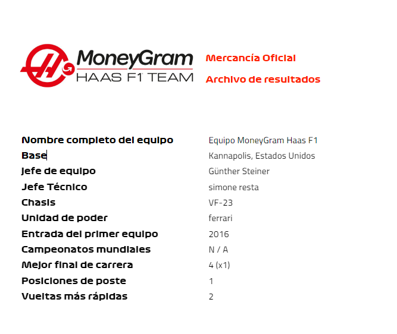
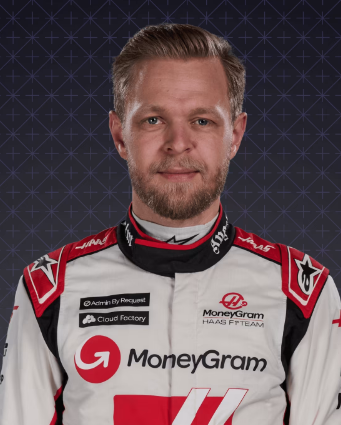

Haas

En perfil
Haas, el equipo más joven de la parrilla, hizo su impresionante debut en 2016 y, en el proceso, se convirtió en el primer equipo de F1 liderado por estadounidenses en tres décadas. Fundado por el industrial Gene Haas, tiene su sede en los Estados Unidos en las mismas instalaciones de Kannapolis, Carolina del Norte, que su equipo ganador del campeonato de la Serie de la Copa Sprint de NASCAR, Stewart-Haas Racing. El equipo con motor Ferrari, dirigido por el carismático Guenther Steiner, también tiene una fábrica en el Reino Unido en Banbury...
2022
El regreso del ex piloto Kevin Magnussen trae un sorprendente resultado P5 en la apertura de la temporada de Bahrein y una primera pole position en un Interlagos golpeado por la lluvia en noviembre. Consigue un total mejorado de 37 puntos, elevándolos a P8 en la clasificación final.
2021
Termine el año sin un punto después de optar por centrarse en el automóvil 2022 en lugar del desarrollo en temporada de la máquina 2021. Mick Schumacher domina a su compañero de equipo Nikita Mazepin en la nueva alineación de pilotos novatos, con un mejor resultado del 12 ° lugar en Hungría.
2020
Incapaz de detener su espiral descendente, cayó al P9 en la general de la tabla, anotando solo tres puntos en el último año de la era Grosjean-Magnussen del equipo. La temporada termina de manera dramática, cuando Romain Grosjean se aleja milagrosamente de un feroz accidente a alta velocidad en Bahréin.
2019
El cuento de hadas de Haas finalmente se encuentra con un bache en el camino, mientras luchan por controlar su recalcitrante máquina VF-19. Cayó al octavo lugar de la tabla, con Romain Grosjean y Kevin Magnussen acumulando apenas 28 puntos entre ellos.
Pilotos

Kevin magnussen
Nico hulkenberg